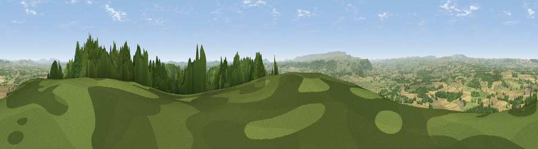

Viewpoint near Norton Canon
#1135 in England · top 2% of its area beats it · near Norton CanonWhere it is
The exact computed spot (SO 39375 48825). Click the marker for map links.
The view, rendered

A 360° render of this exact spot computed from the terrain model, tree cover and land cover — summer colours, afternoon light, calibrated against photographs of famous viewpoints. Real trees, hedges and buildings will differ in detail.
The panorama
Grey silhouette: terrain skyline in each direction (720 bearings, Earth curvature and refraction included). Dashed green: skyline with trees (+15 m) and buildings (+8 m) as obstacles. Blue strip: how far the ground is visible on each bearing.
Where the view opens
Wedge length = distance to the farthest visible ground on that bearing (vegetation-aware). Rings at 10, 25 and 50 km.
What fills the view
35% cropland · 34% grassland · 31% woodland ·
Angular shares of the visible panorama (visual magnitude), not map area. Landscape diversity 0.49 (0–1 Shannon).
Key numbers
More beautiful places nearby
The staircase of upgrades: each row has a higher view potential than everything closer. Driving times are estimates from straight-line distance, calibrated against real road routing — check an actual route before setting out.
| Place | Direction | Drive | Score |
|---|---|---|---|
| Viewpoint near Weobley | NE · 1 km | ~3 min | 79.7 |
| Merbach Hill | WSW · 10 km | ~19 min | 81.1 |
| Viewpoint near Craswall | SW · 19 km | ~33 min | 81.5 |
| Gatley Hill | NNE · 21 km | ~36 min | 82.6 |
| Garway Hill | S · 24 km | ~39 min | 84.6 |
| Herefordshire Beacon | ESE · 38 km | ~56 min | 85.8 |
| North Hill | E · 38 km | ~56 min | 86.8 |
| Worcestershire Beacon | E · 38 km | ~56 min | 87.1 |
52.13438, -2.88715 · source: screening · position refined by local search. Computed location — check access rights before visiting.